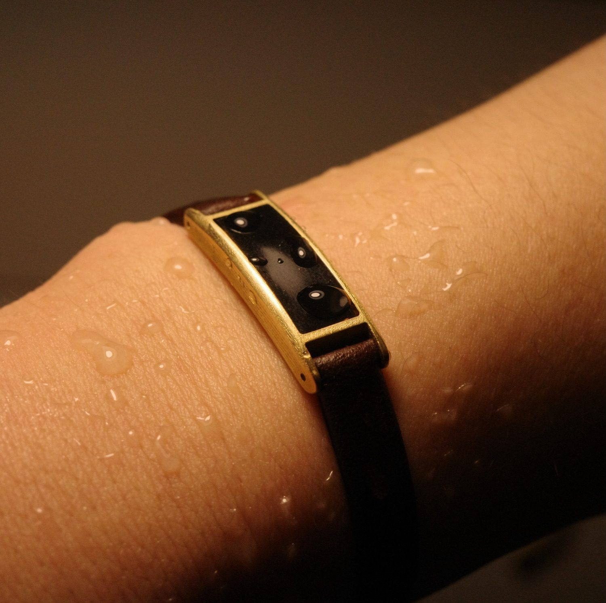

Can a Solar Fitness Tracker Get Through Winter? Start With Your Sleeves
A solar tracker can still collect energy in winter, as long as your sleeve isn’t covering it.
Your winter routine changes the charging picture
In summer, a wrist tracker may see daylight without any planning. In winter, it can spend the commute under a cuff, the working day inside and the journey home in darkness.

The important question is how much useful light reaches the panel. Time outside does not equal charging time if the device stays covered. Garmin makes the same practical point in its solar charging instructions: keep the watch face clear of sleeves. That advice is about exposing the panel, not a claim that different trackers charge at the same rate.
What Ray’s charging estimates mean
Under our test settings, these approximate light exposures replace one day of Ray operation:
| Exposure | Time for one day of operation |
|---|---|
| Direct sunlight | 1–2 minutes |
| Outdoor shade | 10–15 minutes |
| Bright daylight beside a window | About 1 hour |
| Ordinary indoor lighting | Not sufficient |
These are the results behind our charging guide, not a winter guarantee for every location. Weather, angle, window glass and settings affect the result. A short period in strong direct sunlight and the same time beneath a sleeve are very different situations.
We do not have a published winter-by-latitude test that turns these observations into a fixed number for every city. Use your battery trend to judge your own routine.
Reserve covers the gaps
Ray has about two months of battery reserve from a full charge, depending on settings and use. It does not need to replace each day’s energy on that exact day.
That gives you flexibility through darker stretches. But reserve is stored energy, not ongoing generation: if Ray consistently receives less light than it needs, the battery will decline. Starting a trip with a full battery also differs from starting it nearly empty.
Check the app before a long period indoors or a winter journey. Our travel guide covers choosing a tracker when you want fewer charging accessories to pack.
A practical cold-weather routine
Check whether daylight actually reaches the panel during your normal day. If sleeves cover it, give Ray a separate opportunity to see useful light when convenient. There is no need to leave your wrist exposed in uncomfortable weather just to charge a tracker.
Bright daylight beside a window can help, but an office lit by ceiling lamps is not the same thing. Nor does “near a window” describe one reliable light level: the position, glazing and time of day matter.
Look at the battery over several days. If it keeps falling, increase useful exposure instead of assuming the device has enough light because you went outside. Do not use heat as a charging strategy; the energy source is light.
Is solar a good fit for your winter?
Ray’s long reserve and low-power design make occasional daylight useful. A routine with some accessible daylight is a better match than weeks with the panel continuously covered and no deliberate charging opportunity.
If you spend winter almost entirely indoors, plan where that light will come from before choosing a solar tracker. The goal is a routine you can actually keep, not a promise that the season or your location makes battery management disappear.